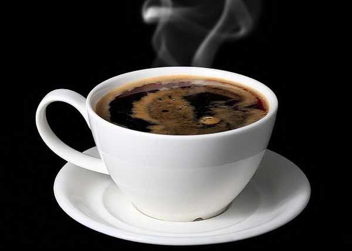

| 咖啡 | 价格 |
|---|---|
| 拿铁 | ¥24 |
| 卡布奇洛 | ¥30 |
| 奥瑞白 | ¥28 |
| 美式咖啡 | ¥27 |
拿铁

拿铁（Latte）在意大利语里是“牛奶”的意思，如果你点一杯“拿铁”， 那么服务生只会给你上一杯牛奶。而意大利语的Caffè Latte指的才是拿铁。 现在很多冷饮店都会推出自己的“拿铁”系列，像“红茶拿铁”“抹茶拿铁”等等， 其实就是奶茶而并没有咖啡的成分。
卡布奇洛
爱喝咖啡的人们，发觉浓缩咖啡、牛奶和奶泡混合后，颜色就像是修士所穿的深褐色道袍， 于是灵机一动，就给牛奶加咖啡又有尖尖奶泡的饮料，取名为卡布奇诺(Cappuccino)。 英文最早使用此字的时间在一九四八年，当时旧金山一篇报导率先介绍卡布奇诺饮料，一直到一九九零年以后， 才成为世人耳熟能详的咖啡饮料。
奥瑞白
奥瑞白是一种起源于澳大利亚的，带有细奶泡的拿铁咖啡，并且在上个世纪八十年代就已经出现了， 它是一款介于拿铁与卡布间的新饮品，而且在日常生活中也是非常受欢迎的。
美式咖啡

美式咖啡（英文：Americano，意大利语：Caffè Americano）咖啡的一种，是最普通的咖啡。 是使用滴滤式咖啡壶所制作出的黑咖啡，又或者是意式浓缩中加入大量的水制成。